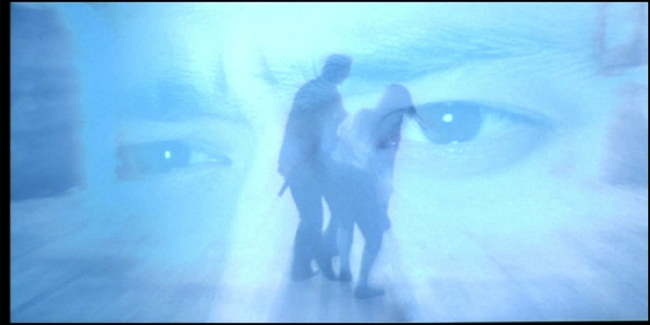
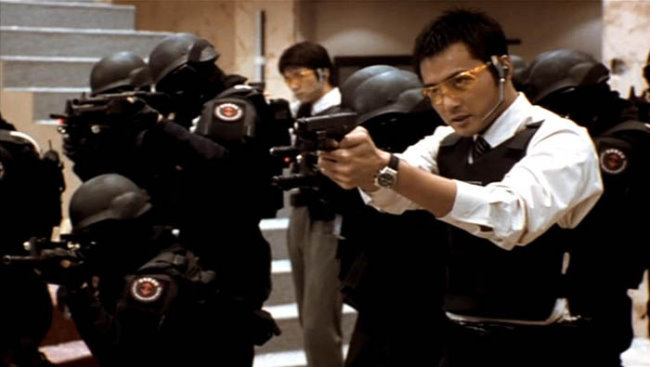
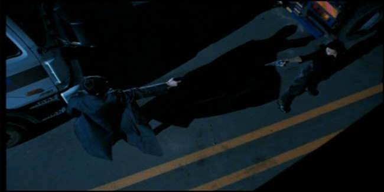
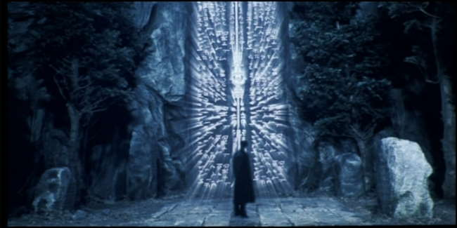
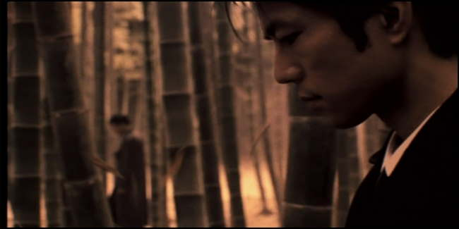
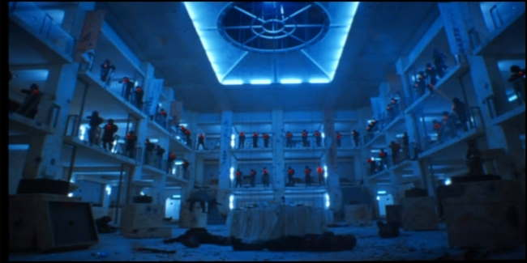
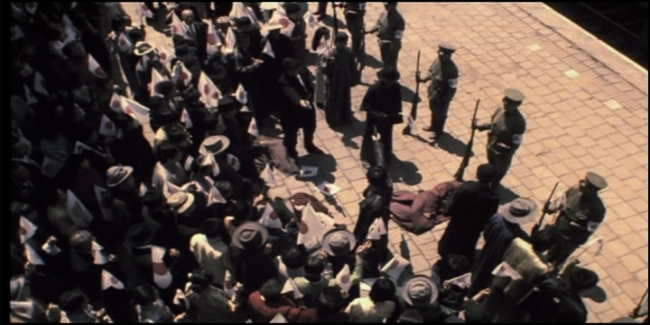

Movie review by : SFAM
Year : 2002
Directed by : Si-myung Lee
Written by : Sang-hak Lee & Si-myung Lee
Degree of Cyberpunk visuals : Low
Correlation to Cyberpunk themes : Medium
Rating : 8/10
Key cast members :

Overview: In yet another very well made Korean Sci-Fi movie, we have a terrific story, great acting, and a wonderfully unfolding secret that really adds to the suspense. 2009: Lost Memories is one of the best Time Travel movies out, and takes place almost completely within an alternate timeline. In this alternate reality timeline, Korea is a Japanese territory called Choson. The primary language of Choson is Japanese, and although the natives still speak Korean in private, they speak Japanese in the course of normal operations. Japan won WWII, and the atomic bombs were dropped on Germany. The Furei-Senjin (Choson Libration Army) are the last ones alive who know that the timeline has been tampered with, and will do whatever is necessary to set things right.

The Story: Sakamoto Masayuki and his partner and best friend, Saigo Shojirou are police officers living in Choson (a province owned by Japan that we know as Korea) who are investigating and confronting the terrorist organization called the Furei-Senjin. Sakamoto discovers that the Furei-Senjin have been after a crescent shaped stone called the Lunar Soul - an ancient artifact purported to have the soul of the moon in it. In pursuing the story, a number of different strands in Sakamoto's life start to fall into place.

For most of his adult life, Sakamoto has a recurring dream about a beautiful woman he has never met - she has a crescent necklace, and in the dream, they shoot someone. Sakamoto knows he is in love with this woman, and, for some reason, thinks they are destined to be together. During the second confrontation with the Furei-Senjin, he meets this woman - it turns out that Oh Hae-rin (the woman from his dreams, played by Seo Jin-ho) is in fact a leader of the Furei-Senjin. She too feels the connection, and stops her followers from killing Sakamoto when they get the chance.

Through his investigation, Sakamoto discovers that back in 1909, in the area surrounding Harbin, there was an attempted assassination of Ito Hirobumi, a prominent Japanese politician back than, and Japan's first Resident General of Korea following the Russo-Japanese War (which Japan used to occupy Korea). This assassination was prevented by Inoue, an unknown soldier, who was later rewarded for his feat by becoming the second Governor. The Inoue Foundation has spent the last century collecting all artifacts from the 1909 time period.

In following the trail, Sakamoto learns too much, and is framed for the murder of a fellow police officer. Sakamoto eventually discovers that history was altered at that moment, and that Hirobumi was supposed to die that day, and that there never should have been an Inoue back in Harbin on that day. This leads him to the astonishing revelation that the Furei-Senjin are actually the last group alive aware of this tragedy, and that they are trying to restore the proper world timeline. As the movie develops, Sakamoto and his partner become enmeshed on opposite sides of this timeline struggle.

Cost of Entry For Understanding: There is a cost of entry to understanding 2009: Lost Memories. It helps if you recognize the difference between Japanese and Korean Characters. Japanese characters are pictoral in nature, whereas Korean characters look like boxes, half-boxes (L-shaped characters) and circles. This is significant especially at the beginning. The other important element is to know which language they are speaking. Sakamoto is Korean, whereas his partner, Saigo Shojirou is Japanese. The importance and meaning of the scenes is often given away when they switch over to speaking Korean (most of the movie's "public" scenes are in Japanese). For instance, when Sakamoto is with his uncle, he ALWAYS speaks Korean. Also important to know is the latent hatred that still exists in Korea towards Japan for the time they were occupied (up until WWII). To Koreans, this movie will come off as far more emotional than for foreigners.

The Bottom Line: 2009: Lost Memories is a very intelligent Korean sci-fi film. I include it as cyberpunk primarily for the wonderfully done time-travel theme done in the very near-future. Te intense confrontation between the best friends that occurs as this movie develops is just terrific. The visuals are all high-tech current visuals though - they are not futuristic in most of the cyberpunk sense. But the world they create is cyberpunk in the sense that it depicts a reality changed by a future traveler to a past time. Also interesting is the notion, that even during a "time-shift" souls might potentially "know" something is amiss.